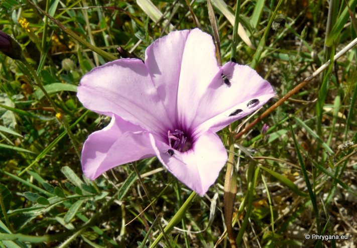

| PHRYGANA | Fauna | Flora | Galles | liste des espèces |
contact -
info - commentaires phrygana1 (at) gmail.com |
| Particularités crétoises | nouveautés | Mines | ressources naturelles |
| Convolvulus althaeoides L. |
| 249 | Flora | CONVOLVULACEAE | Convolvulus L. |
Convolvulus althaeoides Rousolakkos (Palaikastro) 01 avril 2011 |
| la Fausse Guimauve -- Vilucchio rosso - Mallow Leaved Bindweed - Correhuela rosa - Eibisch-Winde | |
| Plante velue, à poils étalés | |
| Feuilles: velues sur les deux faces, pétiolées; feuilles inférieures ovales cordiformes crénelées; feuilles supérieures palmatifides (3 - 9 segments inégaux, le terminal étant le plus grand | |
| Tiges: couchées-ascendantes, volubiles; souche épaisse | |
| Fleurs: roses à coeur plus foncé, assez grandes (30 - 40 mm); solitaires ou à deux sur des pédoncules axillaires plus longs que la feuille; calice velu à lobes ovales; bractées sétacées | |
| Fruit: une capsule glabre | |
| Hauteur: 30 - 100 cm | Type biologique: chaméphyte frutescent |
| Floraison: mars avril mai juin novembre | |
| Altitudes: 0 - 500 m | |
| Statut en Crète: indigène -- native | |
| Biotopes en Crète: lieux rocailleux, bords de chemins, champs abandonnés, anciennes terrasses cultivées | |
| Distribution: région Méditerranéenne | |
| Note: plante héliophile | |
|
Convolvulus althaeoides Rousolakkos (Palaikastro) 01 avril 2011 |
|
Convolvulus althaeoides Rousolakkos (Palaikastro) 01 avril 2011 |
|
Convolvulus althaeoides Rethymno 09 novembre 2011 |
|
Convolvulus althaeoides Rethymno 09 novembre 2011 |
|
 Convolvulus althaeoides Kamilari 05 avril 2013 |
|
Convolvulus althaeoides Kamilari 05 avril 2013 |
| 13 avril 2013 |
| © paul fontaine -- © Phrygana.eu 2007 -- 2013 |